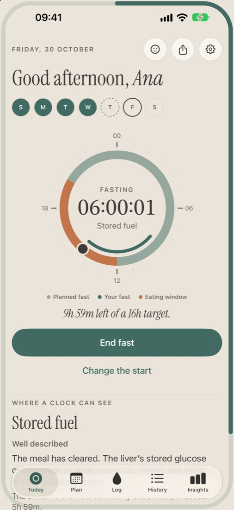
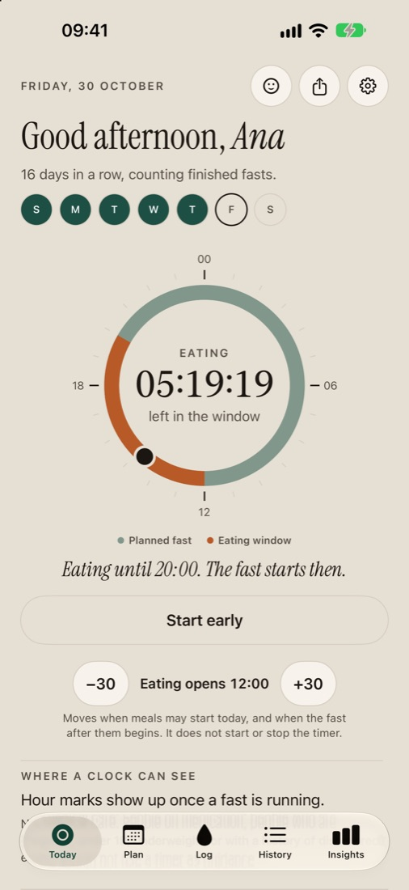
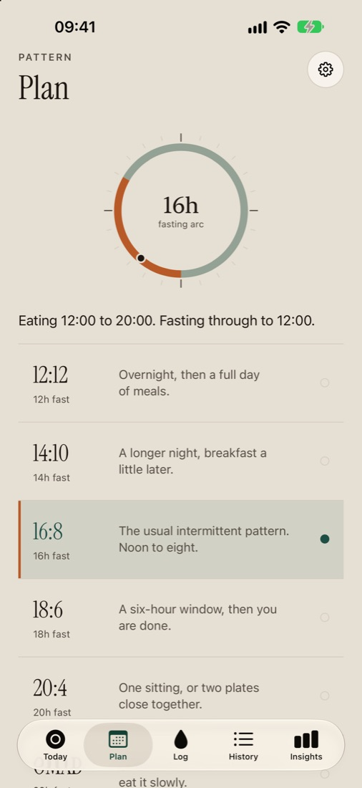
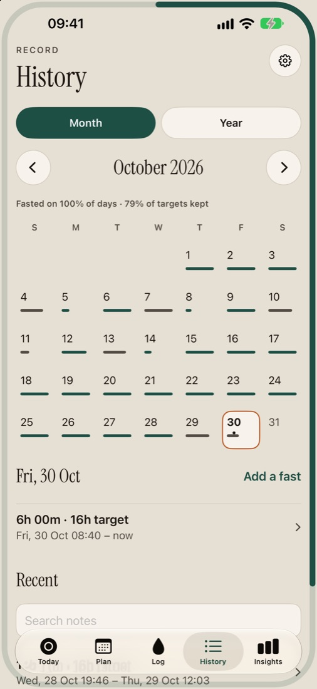
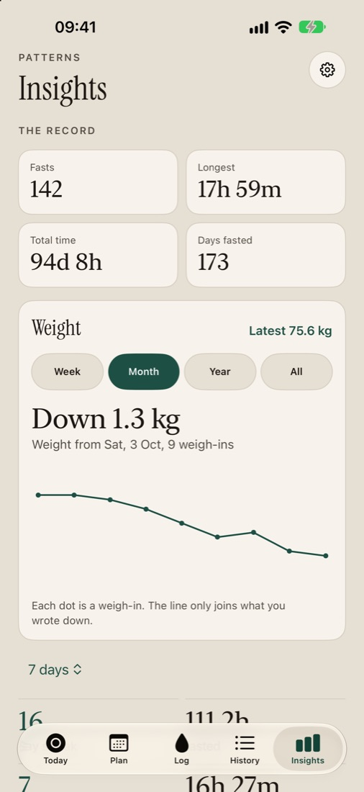
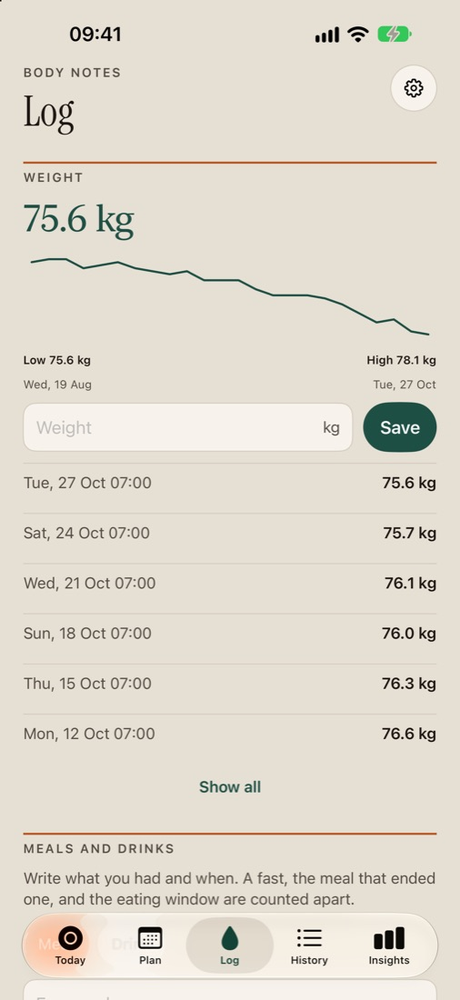
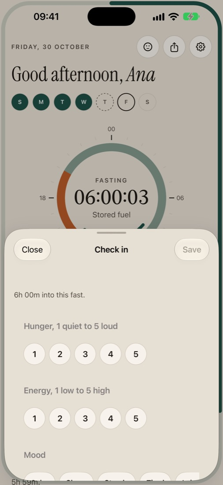
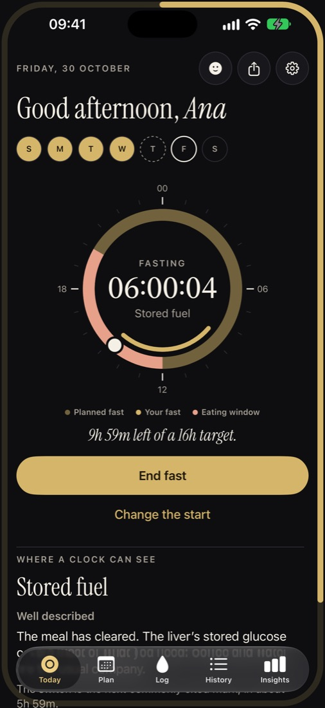
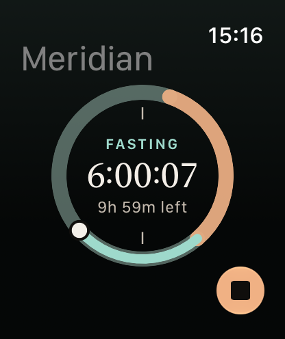
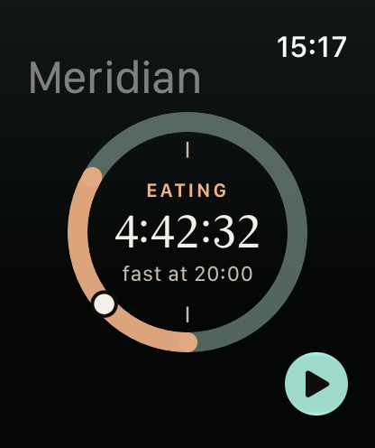

For iPhone, iPad and Apple Watch
The day,
on a ring.
A calm intermittent-fasting clock and journal. When you eat, when you fast, and where the clock is now.
A 16:8 day, live at your time.
Inside the app
Everything on one quiet page a day.
Swipe or scroll →








What it does
Small, exact, and kind about it.
The clock
Start when you stop eating, end when you are ready, or say "I started at 20:00". Undo is always there.
A pattern, not a debt
12:12 to OMAD, 5:2 and open fasts. Pick your days; a skipped window is never a missed day.
The journal
What ended the fast and how it sat, morning check-ins, weight and water, in a few taps.
Insights
Streaks, hours fasted and kept windows, and a pattern coach that reads months of your own log.
Beyond the app
Home and Lock Screen widgets, a Live Activity in the Dynamic Island, and Meridian on Apple Watch.
Safe by default
Clear notes on who should not fast, and an extra check before fasts of a day and a half or more.
Apple Watch
The fast, on your wrist.
Start and end from the watch, see the 24-hour dial at a glance, and keep it on the watch face with a complication.
Pressed while your iPhone is out of range? Meridian records the moment you pressed it.


Your data
Yours, wherever you keep it.
Meridian has no account, no server and no analytics. It cannot see your log. Read the privacy policy.
- The log lives on your iPhone or iPad
- iCloud sync uses your own private iCloud, only if you turn it on
- Apple Health stays in Health, never in iCloud
- No ads, no tracking, export any time